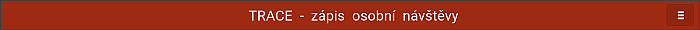
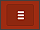
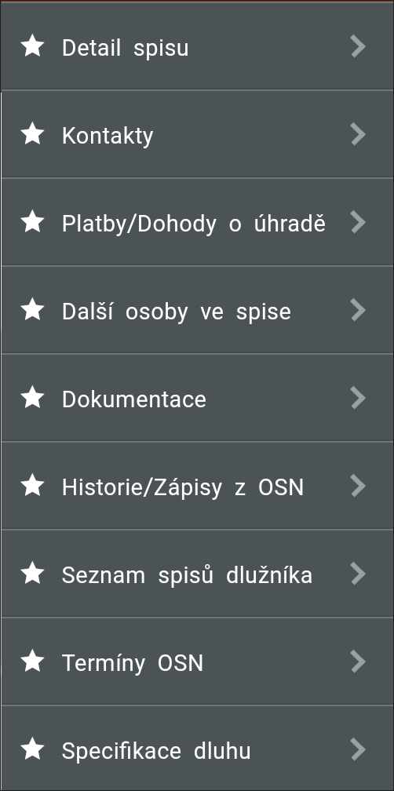
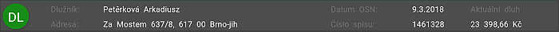
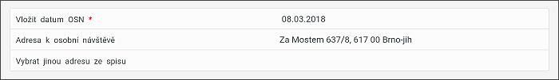
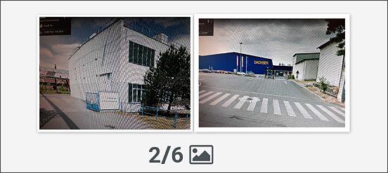
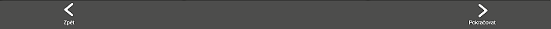

Objekty obrazovky
Na obrazovce je několik záklaldních částí:
Titulková část

 Menu pro detaily spisu. Pro zobrazení jednotlivých podzáložek je možno kliknout na tlačítko se třemi čárkami, nebo prstem posunout obrazem od okraje zprava doleva.

V menu jsou všechny podzáložky určené pro Detail dlužníka. V horní části je lišta se základními údaji dlužníka pro příslušný spis.

Aplikace předkládá termín OSN a předpokládané adresy OSN. Pokud chce IP vybrat jinou adresu prováděné OSN, je třeba kliknout na prázdný prostor v poli pod adresou (pokud jí ovšem spis obsahuje).

Inspektor musí vložit fotografie do prostoru pod pole "Vybrat jinou adresu ze spisu".
Kliknutím na ikonu fotoaparátu je možné vyfotit až šest fotografií.

Navigační lišta pro pokračování v zápise či pro vrácení se zpět.
